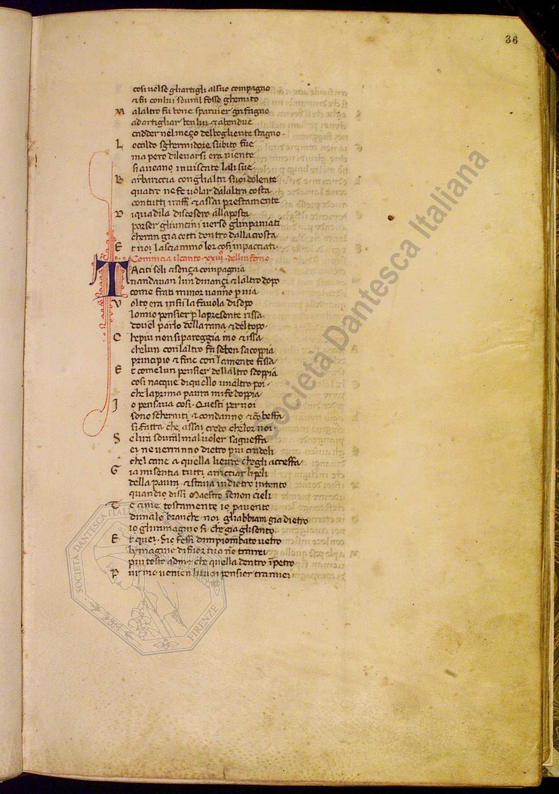
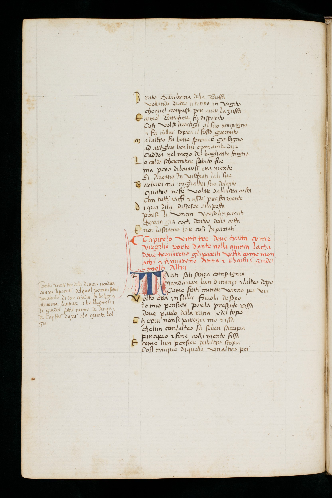
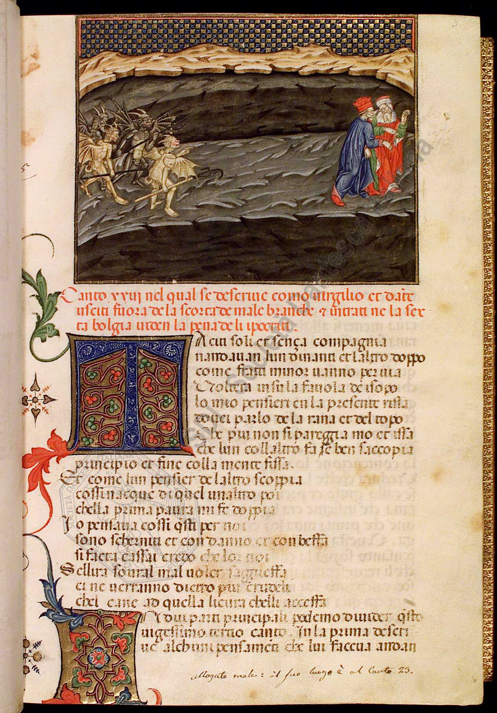

|  XIV century |  XV century |  XV century |
| Witness 1: Taciti soli asença compagnia | |
| Witness 2: Taciti soli sança compagnia | |
| Witness 3: Taciti soli et sença compagnia |
|
W1 and W2 are synonyms, but there is a
lexical difference between them. W1, W2, W6 and W7 have a verb at present tense, while W3 and W4 use the past tense. W6 and W7 are not grammatically correct. W5 is the plural of W1 and W6. W8 may be an error, as it differs only for a single letter. |
DiXiT Marie Curie fellow
Huygens ING